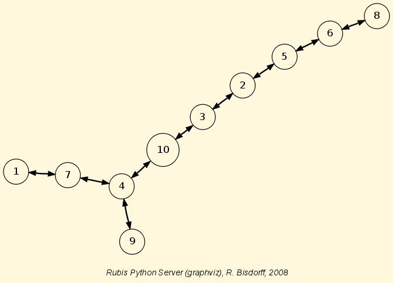

Technical Documentation of the Digraph resources!¶
| Author: | Raymond Bisdorff, University of Luxembourg FSTC/CSC |
|---|---|
| Version: | $Revision: Python 3$ |
| Copyright: |
|
Introduction¶
This Technical Manual describes the Python-3 implementation of generic resources for computing kernels and other qualified choices in bipolar-valued outranking digraphs. This computing ressource is useful in the filed of algorithmic decision sciences problems
Developping the Rubis decision support methodology is an ongoing research project of Raymond Bisdorff <http://charles-sanders-peirce.uni.lu/bisdorff/>, University of Luxembourg.
The Python following modules make extensivelyusage of the Decimal module and therefore work best with Python-3.3+.
The basic idea of these Python modules is to make easy python interactive sessions or write short Python scripts for computing all kind of results from a bipolar valued outranking digraph. These include such features as maximal independent or irredundant choices, maximal dominant or absorbent choices etc.
The Python development of these computing ressources offers the advantage of an easy to write and maintain OOP source code as expected from a performing scripting language without loosing on efficiency in execution times compared to compiled languages such as C++ or Java.
The Digraph source code is split into five interdependant modules, where the digraphs module is the master source.
- digraphs module
- main part of the source code with the top Digraph and the old Python-2 version (-Rev:1.630) BipolarOutrankingDigraph classes;
- graphs module
- specialization for undirected graphs with brigde to the main Digraph module ressources;
- outrankingDigraphs module
- New version BipolarOutrankingDigraph classes;
- perfTabs module
- everything needed for handling Rubis Performance Tableaux;
- votingDigraphs module
- additional classes and methods for computing with election results;
- sortingDigraphs module
- additional tools for solving sorting problems;
- linearOrders module
- additional tools for solving ranking problems.
digraphs module¶
- class digraphs.AsymmetricDigraph(digraph)¶
Bases: digraphs.Digraph
Renders the asymmetric of a Digraph instance
- constructRelation(relationIn)¶
- Parameters:
- relation and cut level.
Renders the polarised relation.
- class digraphs.AsymmetricPartialDigraph(digraph)¶
Bases: digraphs.Digraph
Renders the asymmetric part of a Digraph instance
- constructRelation(relationIn)¶
Parameters: relation and cut level. Renders the polarised relation.
- class digraphs.CirculantDigraph(order=7, valuationdomain={'max': Decimal('1.0'), 'min': Decimal('-1.0')}, circulants=[-1, 1])¶
Bases: digraphs.Digraph
- Parameters:
- order > 0;valuationdomain ={‘min’:m, ‘max’:M};circulant connections = list of positive and/or negative circular shifts of value 1 to n.
Specialization of the general Digraph class for generating temporary circulant digraphs
- Default instantiation C_7:
- order = 7,valuationdomain = {‘min’:-1.0,’max’:1.0},circulants = [-1,1].
- showShort()¶
- class digraphs.CoDualDigraph(other)¶
Bases: digraphs.Digraph
Instantiates the associated codual version from a given Digraph called other.
Instantiates as other.__class__ !
Copies the case given the description, the criteria and the evaluation dictionary into self.
- class digraphs.CocaDigraph(digraph=None, Cpp=False, Piping=False, Comments=False)¶
Bases: digraphs.Digraph
- Parameters:
- Stored or memory resident digraph instance.
Specialization of general Digraph class for instantiation of chordless odd circuits augmented digraphs.
- addCircuits(Comments=False)¶
Augmenting self with self.circuits.
- closureChordlessOddCircuits(Cpp=False, Piping=False, Comments=False)¶
Closure of chordless odd circuits extraction.
- showCircuits()¶
show methods for chordless odd circuits in CocaGraph
- showComponents()¶
- class digraphs.CoceDigraph(digraph=None, Cpp=False, Piping=False, Comments=False, Debug=False)¶
Bases: digraphs.Digraph
- Parameters:
- Stored or memory resident digraph instance.
Specialization of general Digraph class for instantiation of chordless odd circuits eliminated digraphs.
- iterateCocElimination(Comments=True, Debug=False)¶
Eliminates all chordless odd circuits with rising valuation cut levels. Renders a tuple (level,polarisedDigraph) where level is the necessary bipolar cut level for eliminating all chordless odd circuits, and polarisedDigraph is the resulting digraph instance. Renders (None,None) if no chordless odd circuit is detected.
- class digraphs.CompleteDigraph(order=5, valuationdomain=(-1.0, 1.0))¶
Bases: digraphs.Digraph
- Parameters:
- order > 0; valuationdomain=(Min,Max).
Specialization of the general Digraph class for generating temporary complete graphs of order 5 in {-1,0,1} by default.
- class digraphs.ConverseDigraph(other)¶
Bases: digraphs.Digraph
Instantiates the associated converse orreciprocal version from a given Digraph called other.
Instantiates as other.__class__ !
Copies the case given the description, the criteria and the evaluation dictionary into self.
- class digraphs.Digraph(file=None, order=7)¶
Bases: builtins.object
General class of digraphs, R.B. March 2006:
- Python data file format:
- actionset = [‘1’,‘2’,‘3’,‘4’,‘5’]
- valuationdomain = { ‘min’:0, ‘med’:1, ‘max’: 2}
- relation = { ‘1’: { ‘1’:0, ‘2’: 2, ...}, ...}
- Example python (>= 2.4 required) session::
>>> from digraphs import Digraph >>> g = Digraph('tempdigraph') >>> g.showShort() *----- show short --------------* Digraph : tempdigraph Actions : ['1', '2', '3'] Valuation domain : {'med': Decimal("0.5"), 'max': Decimal("1.0"), 'min': Decimal("0")} *--- Connected Components ---* 1: ['1', '2', '3']
- MISgen(S, I)¶
generator of maximal independent choices S ::= remaining nodes; I ::= current independent choice inititalize: self.MISgen(self.actionscopy(),set()) (voir Byskov 2004)
- absirred(choice)¶
Renders the crips -irredundance degree of a choice.
- absirredundant(U)¶
Generates all -irredundant choices of a digraph.
- absirredval(choice, relation)¶
Renders the valued -irredundance degree of a choice.
- absirredx(choice, x)¶
Computes the crips -irredundance degree of node x in a choice.
- abskernelrestrict(choice)¶
Parameter: prekernel Renders absorbent prekernel restricted relation.
- absorb(choice)¶
Renders the absorbency degree of a choice.
- absorbentChoices(S)¶
Generates all minimal absorbent choices of a bipolar valued digraph.
- agglomerationDistribution()¶
Output: aggloCoeffDistribution, meanCoeff Renders the distribution of agglomeration coefficients.
- aneighbors(node)¶
Renders the set of absorbed in-neighbors of a node.
- automorphismGenerators()¶
Add automorphism group generators to digraph.
- averageCoveringIndex(choice, direction='out')¶
Renders the average covering index of a given choice in a set of objects, ie the average number of choice members that cover each non selected object.
- bestRanks()¶
renders best possible ranks from indegrees account
- bipolarKCorrelation(digraph, Debug=False)¶
Renders the bipolar Kendall correlation between two bipolar valued digraphs computed from the average valuation of the XORDigraph(self,digraph) instance.
Warning
Obsolete! Is replaced by the self.computeBipolarCorrelation(other) Digraph method
- bipolarKDistance(digraph, Debug=False)¶
Renders the bipolar crisp Kendall distance between two bipolar valued digraphs.
Warning
Obsolete! Is replaced by the self.computeBipolarCorrelation(other, MedianCut=True) Digraph method
- chordlessPaths(Pk, n2, Odd=False, Comments=False, Debug=False)¶
New procedure from Agrum study April 2009 recursive chordless path extraction strating from path Pk = [n2, ...., n1] and ending in node n2. Optimized with marking of visited chordless P1s.
- circuitAverageCredibility(circuit)¶
Renders the average linking credibility of a COC.
- circuitMinCredibility(circuit)¶
Renders the minimal linking credibility of a COC.
- closeSymmetric()¶
Produces the symmetric closure of self.relation.
- closeTransitive(Irreflexive=True)¶
Produces the transitive closure of self.relation.
- coSize()¶
Renders the number of non validated non reflexive arcs
- collectcomps(x, A, ncomp)¶
Recursive subroutine of the components method.
- components()¶
Renders the list of connected components.
- computeAllDensities(choice=None)¶
parameter: choice in self renders six densitiy parameters: arc density, double arc density, single arc density, strict single arc density, absence arc density, strict absence arc densitiy.
- computeArrowRaynaudRanking(Debug=False)¶
renders a ranking of the actions following Arrow&Raynaud’s rule.
- computeAverageValuation()¶
Computes the bipolar average correlation between self and the crisp complete digraph of same order of the irreflexive and determined arcs of the digraph
- computeBadChoices(Comments=False)¶
- Characteristic values for potentially bad choices.[(0)-determ,(1)degirred,(2)degi,(3)degd,(4)dega,(5)str(choice),(6)absvec]
- computeBadPirlotChoices(Comments=False)¶
Characteristic values for potentially bad choices using the Pirlot’s fixpoint algorithm.
- computeBipolarCorrelation(other, MedianCut=False, Debug=False)¶
Renders the bipolar correlation K of a self.relation when compared with a given compatible (same actions set)) digraph or a [-1,1] valued compatible relation (same actions set).
If MedianCut=True, the correlation is computed on the median polarized relations.
K = sum_{x != y} [ min( max(-self.relation[x][y]),other.relation[x][y]), max(self.relation[x][y],-other.relation[x][y]) ]
K /= sum_{x!=y} [ min(abs(self.relation[x][y]),abs(other.relation[x][y])) ]
Warning
Renders a tuple with at position 0 the actual bipolar correlation index and in position 1 the minimal determination level D of self and the other relation.
D = sum_{x != y} min(abs(self.relation[x][y]),abs(other.relation[x][y])) / n(n-1)
where n is the number of actions considered.
The correlation index with a completely indeterminate relation is by convention 0.0 at determination level 0.0 .
- computeChordlessCircuits(Odd=False, Comments=False, Debug=False)¶
Renders the set of all chordless odd circuits detected in a digraph. Result (possible empty list) stored in <self.circuitsList> holding a possibly empty list tuples with at position 0 the list of adjacent actions of the circuit and at position 1 the set of actions in the stored circuit.
- computeConcentrationIndex(X, N)¶
Renders the Gini concentration index of the X serie. N contains the partial frequencies. Based on the triangle summation formula.
- computeConcentrationIndexTrapez(X, N)¶
Renders the Gini concentration index of the X serie. N contains the partial frequencies. Based on the triangles summation formula.
- computeCppChordlessCircuits(Odd=False, Debug=False)¶
python wrapper for the C++/Agrum based chordless circuits enumeration exchange arguments with external temporary files
- computeCppInOutPipingChordlessCircuits(Odd=False, Debug=False)¶
python wrapper for the C++/Agrum based chordless circuits enumeration exchange arguments with external temporary files
- computeCutLevelDensities(choice, level)¶
parameter: choice in self, robustness level renders three robust densitiy parameters: robust double arc density, robust single arc density, robust absence arc densitiy.
- computeDensities(choice)¶
parameter: choice in self renders the four densitiy parameters: arc density, double arc density, single arc density, absence arc density.
- computeDeterminateness()¶
Computes the Kendalll distance of self with the all median valued (indeterminate) digraph.
- computeGoodChoices(Comments=False)¶
- Characteristic values for potentially good choices.[(0)-determ,(1)degirred,(2)degi,(3)degd,(4)dega,(5)str(choice),(6)domvec]
- computeGoodPirlotChoices(Comments=False)¶
Characteristic values for potentially good choices using the Pirlot fixpoint algorithm.
- computeKemenyIndex(otherRelation)¶
renders the Kemeny index of the self.relation compared with a given crisp valued relation of a compatible other digraph (same nodes or actions).
- computeKemenyOrder(isProbabilistic=False, orderLimit=7, seed=None, sampleSize=1000, Debug=False)¶
renders a ranking of the actions with minimal Kemeny index. Return a tuple: kemenyOrder, kemenyIndex
- computeKohlerRanking(Debug=False)¶
renders a ranking of the actions following Kohler’s rule.
- computeMeanInDegree()¶
Renders the mean indegree of self. !!! self.size must be set previously !!!
- computeMeanOutDegree()¶
Renders the mean degree of self. !!! self.size must be set previously !!!
- computeMeanSymDegree()¶
Renders the mean degree of self. !!! self.size must be set previously !!!
- computeMedianOutDegree()¶
Renders the median outdegree of self. !!! self.size must be set previously !!!
- computeMedianSymDegree()¶
Renders the median symmetric degree of self. !!! self.size must be set previously !!!
Renders a list of more or less unrelated pairs.
- computeODistance(op2, comments=False)¶
renders the squared normalized distance of two digraph valuations. Parameters: op2 digraphs of same order as self. The digraphs must be of same order.
- computeOrbit(choice, withListing=False)¶
renders the set of isomorph copies of a choice following the automorphism of the digraph self
- computeOrdinalCorrelation(other, MedianCut=False, Debug=False)¶
obsolete: dummy replacement for Digraph.computeBipolarCorrelation method
- computePairwiseClusterComparison(K1, K2, Debug=False)¶
compute the pairwise cluster comparison credibility vector from bipolar-valued digraph g. with K1 and K2 disjoint lists of action keys from g actions disctionary. Returns the dictionary {‘I’: Decimal(),’P+’:Decimal(),’P-‘:Decimal(),’R’ :Decimal()} where one and only one item is strictly positive.
- computePreKernels()¶
computing dominant and absorbent preKernels Result in self.dompreKernels and self.abspreKernels
- computePreorderRelation(preorder, Debug=False)¶
Renders the bipolar-valued relation obtained from a given preordering (list of lists) result.
- computePrudentBestChoiceRecommendation(CoDual=False, Comments=False, Debug=False)¶
Renders the best choice recommendation after eliminating all odd chordless circuits with a minimal cut of the valuation.
- computePrudentBetaLevel(Debug=False)¶
computes alpha, ie the lowest valuation level, for which the bipolarly polarised digraph doesn’t contain a chordless circuit.
- computeRankedPairsOrder(Cpp=False, Debug=False)¶
renders a ranking of the actions obtained from the ranked pairs rule.
- computeRankingByChoosing(Debug=False, CoDual=False)¶
Computes a weak preordring of the self.actions by iterating jointly best and worst choice elagations.
Stores in self.rankingByChoosing[‘result’] a list of ((P+,bestChoice),(P-,worstChoice)) pairs where P+ (resp. P-) gives the best (resp. worst) choice complement outranking (resp. outranked) average valuation via the computePairwiseClusterComparison method.
If self.rankingByChoosing[‘CoDual’] is True, the ranking by chossing was computed on the codual of self.
- computeRankingByChoosingRelation(Debug=False)¶
Renders the bipolar-valued relation obtained from the self.rankingByChoosing result.
- computeRelationalStructure(Debug=False)¶
Renders the counted decomposition of the valued relations into the following type of links: gt ‘>’, eq ‘=’, lt ‘<’, incomp ‘<>’, leq ‘<=’, geq ‘>=’, indeterm ‘?’
- computeRubisChoice(Comments=False)¶
Renders self.strictGoodChoices, self.nullChoices self.strictBadChoices, self.nonRobustChoices.
- computeRubyChoice(Comments=False)¶
dummy for computeRubisChoice() old versions compatibility.
- computeSingletonRanking(Comments=False, Debug=False)¶
Renders the sorted bipolar net determinatation of outrankingness minus outrankedness credibilities of all singleton choices. res = ((netdet,singleton,dom,absorb)+)
- computeSizeTransitiveClosure()¶
Renders the size of the transitive closure of a digraph.
- computeSlaterOrder(isProbabilistic=False, seed=None, sampleSize=1000, Debug=False)¶
renders a ranking of the actions with minimal Slater index. Return a tuple: slaterOrder, slaterIndex
- computeTransitivityDegree()¶
Renders the transitivity degree of a digraph.
Renders a list of more or less unrelated pairs.
- computeValuationLevels(choice=None, Debug=False)¶
renders the symmetric closure of the apparent valuations levels of self in an increasingly ordered list. If parameter choice is given, the computation is limited to the actions of the choice.
- computeValuationPercentages(choice, percentiles, withValues=False)¶
Parameters: choice and list of percentages. renders a series of quantiles of the characteristics valuation of the arcs in the digraph.
- computeValuationPercentiles(choice, percentages, withValues=False)¶
Parameters: choice and list of percentages. renders a series of quantiles of the characteristics valuation of the arcs in the digraph.
- computeValuationStatistics(Sampling=False, Comments=False)¶
Renders the mean and variance of the valuation of the non reflexive pairs.
- computeupdown1(s, S)¶
Help method for show_MIS_HB2 method. fills self.newmisset, self.upmis, self.downmis.
- computeupdown2(s, S)¶
Help method for show_MIS_HB1 method. fills self.newmisset, self.upmis, self.downmis.
- computeupdown2irred(s, S)¶
Help method for show_MIS_HB1 method. fills self.newmisset, self.upmis, self.downmis.
- condorcetWinners()¶
Renders the set of decision actions x such that self.relation[x][y] > self.valuationdomain[‘med’] for all y != x.
- contra(v)¶
Parameter: choice. Renders the negation of a choice v characteristic’s vector.
- convertRelationToDecimal()¶
Convert the float valued self.relation in a decimal valued one.
- convertValuationToDecimal()¶
Convert the float valuation limits to Decimals.
- coveringIndex(choice, direction='out')¶
Renders the covering index of a given choice in a set of objects, ie the minimum number of choice members that cover each non selected object.
- crispKDistance(digraph, Debug=False)¶
Renders the crisp Kendall distance between two bipolar valued digraphs.
Warning
Obsolete! Is replaced by the self.computeBipolarCorrelation(other, MedianCut=True) Digraph method
- detectChordlessCircuits(Comments=False, Debug=False)¶
Detects a chordless circuit in a digraph. Returns a Boolean
- detectChordlessPath(Pk, n2, Comments=False, Debug=False)¶
New procedure from Agrum study April 2009 recursive chordless path extraction strating from path Pk = [n2, ...., n1] and ending in node n2. Optimized with marking of visited chordless P1s.
- detectCppChordlessCircuits(Debug=False)¶
python wrapper for the C++/Agrum based chordless circuits detection exchange arguments with external temporary files. Returns a boolean value
- determinateness(vec, inPercent=True)¶
Renders the determinateness of a bipolar characteristic vector
- diameter(Oriented=False)¶
Renders the (by default non-oriented) diameter of the digraph instance
- digraph2Graph(valuationDomain={'med': 0, 'max': 1, 'min': -1}, Debug=False, conjunctiveConversion=True)¶
Convert a Digraph instance to a Graph instance.
- dneighbors(node)¶
Renders the set of dominated out-neighbors of a node.
- domin(choice)¶
Renders the dominance degree of a choice.
- dominantChoices(S)¶
Generates all minimal dominant choices of a bipolar valued digraph. Initiate with S = self.actions,copy().
- domirred(choice)¶
Renders the crips +irredundance degree of a choice.
- domirredval(choice, relation)¶
Renders the valued +irredundance degree of a choice.
- domirredx(choice, x)¶
Renders the crips +irredundance degree of node x in a choice.
- domkernelrestrict(choice)¶
Parameter: prekernel Renders dominant prekernel restricted relation.
- exportGraphViz(fileName=None, bestChoice=set(), worstChoice=set(), noSilent=True, graphType='png', graphSize='7, 7')¶
export GraphViz dot file for graph drawing filtering.
- flatChoice(ch, Debug=False)¶
Converts set or list ch recursively to a flat list of items.
- forcedBestSingleChoice()¶
Renders the set of most determined outranking singletons in self.
- gammaSets()¶
Renders the dictionary of neighborhoods {node: (dx,ax)}
- generateAbsPreKernels()¶
Generate all absorbent prekernels from independent choices generator.
- generateDomPreKernels()¶
Generate all dominant prekernels from independent choices generator.
- graphDetermination()¶
Output: average arc determination
- htmlRelationTable(tableTitle='Relation Table', relationName=' R ', hasIntegerValues=False, actionsSubset=None, isColored=False)¶
renders the relation valuation in actions X actions html table format.
- inDegrees()¶
renders the median cut indegrees
- inDegreesDistribution()¶
Renders the distribution of indegrees.
- independentChoices(U)¶
Generator for all independent choices with neighborhoods of a bipolar valued digraph. Initiate with U = self.singletons(). Yields [(independent choice, domnb, absnb, indnb)].
- inner_prod(v1, v2)¶
Parameters: two choice characteristic vectors Renders the inner product of two characteristic vetors.
- intstab(choice)¶
Computes the independence degree of a choice.
- irreflex(mat)¶
puts diagonal entries of mat to valuationdomain[‘min’]
- isCyclic(Debug=True)¶
checks the cyclicity of self.relation by checking for a reflexive loop in its transitive closure !! self.relation is supposed to be irreflexive !!
- iterateRankingByChoosing(CoDual=False, Comments=True, Debug=False)¶
Renders a ranking by choosing result when progressively eliminating all chordless odd circuits with rising valuation cut levels.
- kChoices(A, k)¶
Renders all choices of length k from set A
- matmult2(m, v)¶
Parameters: digraph relation and choice characteristic vector matrix multiply vector by inner production
- meanDegree()¶
Renders the mean degree of self. !!! self.size must be set previously !!!
- meanLength(Oriented=False)¶
Renders the (by default non-oriented) mean neighbourhoor depth of self. !!! self.order must be set previously !!!
- minimalChoices(S)¶
Generates all dominant or absorbent choices of a bipolar valued digraph.
- Initiate with:
- S = (actions, dict of dominant or absorbent closed neighborhoods), see showMinDom and showMinAbs methods.
- minimalValuationLevelForCircuitsElimination(Debug=False, Comments=False)¶
renders the minimal valuation level <lambda> that eliminates all self.circuitsList stored odd chordless circuits from self.
Warning
The <lambda> level polarised may still contain newly appearing chordless odd circuits !
- neighbourhoodCollection(Oriented=False, Potential=False)¶
Renders the neighbourhood.
- neighbourhoodDepthDistribution(Oriented=False)¶
Renders the distribtion of neighbourhood depths.
- notGammaSets()¶
Renders the dictionary of not neighborhoods {node: (dx,ax)}
- notaneighbors(node)¶
Renders the set of absorbed not in-neighbors of a node.
- notdneighbors(node)¶
Renders the set of not dominated out-neighbors of a node.
- omax(L, Debug=False)¶
epistemic disjunction for bipolar outranking characteristics computation
- omin(L, Debug=False)¶
epistemic conjunction for bipolar outranking characteristics computation
- outDegrees()¶
renders the median cut outdegrees
- outDegreesDistribution()¶
Renders the distribution of outdegrees.
- plusirredundant(U)¶
Generates all +irredundant choices of a digraph.
- powerset(U)¶
Generates all subsets of a set.
- readPerrinMisset(file)¶
read method for 0-1-char-coded MISs from perrinMIS.c curd.dat file.
- readPerrinMissetOpt(file)¶
read method for 0-1-char-coded MISs from perrinMIS.c curd.dat file.
- readabsvector(x, relation)¶
Parameter: action x absorbent in vector.
- readdomvector(x, relation)¶
Parameter: action x dominant out vector.
- recodeValuation(newMin=-10.0, newMax=10.0, Debug=False)¶
Recodes the characteristic valuation domain according to the parameters given.
- save(fileName='tempdigraph', option=None, Decimal=True)¶
Persistent storage of a Digraph class instance in the form of a python source code file
- saveXMCDA(fileName='temp', relationName='R', category='random', subcategory='valued', author='digraphs Module (RB)', reference='saved from Python', valuationType='standard', servingD3=False)¶
save digraph in XMCDA format.
- saveXMCDA2(fileName='temp', relationName='R', relationType='binary', category='random', subcategory='valued', author='digraphs Module (RB)', reference='saved from Python', valuationType='standard', digits=2, servingD3=False)¶
save digraph in XMCDA format.
- saveXML(name='temp', category='general', subcategory='general', author='digraphs Module (RB)', reference='saved from Python')¶
save digraph in XML format.
- savedre(name='temp')¶
save digraph in nauty format.
- sharp(x, y)¶
Paramaters: choice characteristic values. Renders the sharpest of two characteristic values x and y.
- sharpvec(v, w)¶
Paramaters: choice characteristic vectors. Renders the sharpest of two characteristic vectors v and w.
- showActions()¶
presentation methods for digraphs actions
- showAll()¶
- showAutomorphismGenerators()¶
Renders the generators of the automorphism group.
- showBadChoices(Recompute=True)¶
Characteristic values for potentially bad choices.
- showChoiceVector(ch)¶
show procedure for annotated bipolar choices
- showChordlessCircuits()¶
show methods for chordless circuits in CocaGraph
- showCircuits()¶
show methods for chordless circuits in CocaGraph
- showComponents()¶
- showGoodChoices(Recompute=True)¶
Characteristic values for potentially good choices.
- showMIS(withListing=True)¶
Prints all maximal independent choices Result in self.misset.
- showMIS_AH(withListing=True)¶
Prints all MIS using the Hertz method. Result saved in self.hertzmisset.
- showMIS_HB2(withListing=True)¶
Prints all MIS using the Hertz-Bisdorff method. Result saved in self.newmisset.
- showMIS_RB(withListing=True)¶
Prints all MIS using the Bisdorff method. Result saved in self.newmisset.
- showMIS_UD(withListing=True)¶
Prints all MIS using the Hertz-Bisdorff method. Result saved in self.newmisset.
- showMaxAbsIrred(withListing=True)¶
Computing maximal -irredundant choices: Result in self.absirset.
- showMaxDomIrred(withListing=True)¶
Computing maximal +irredundant choices: Result in self.domirset.
- showMinAbs(withListing=True)¶
Prints minimal absorbent choices: Result in self.absset.
- showMinDom(withListing=True)¶
Prints all minimal dominant choices: Result in self.domset.
- showOrbits(InChoices, withListing=True)¶
Prints the orbits of Choices along the automorphisms of the digraph self.
- showOrbitsFromFile(InFile, withListing=True)¶
Prints the orbits of Choices along the automorphisms of the digraph self by reading in the 0-1 misset file format.
- showPreKernels(withListing=True)¶
Printing dominant and absorbent preKernels Result in self.dompreKernels and self.abspreKernels
- showRankingByChoosing()¶
A show method for self.rankinByChoosing result.
Warning
The self.computeRankingByChoosing(CoDual=False/True) method instantiating the self.rankingByChoosing slot is pre-required !
- showRelation()¶
prints the relation valuation in ##.## format.
- showRelationTable(IntegerValues=False, actionsSubset=None, relation=None, ndigits=2)¶
prints the relation valuation in actions X actions table format.
- showRubisBestChoiceRecommendation(Comments=False, Debug=False)¶
Renders the RuBis best choice recommendation.
- showRubyChoice(Comments=False)¶
dummy for showRubisChoice() older versions compatibility
- showShort()¶
concise presentation method for genuine digraphs.
- showSingletonRanking(Comments=True, Debug=False)¶
Calls self.computeSingletonRanking(comments=True,Debug = False). Renders and prints the sorted bipolar net determinatation of outrankingness minus outrankedness credibilities of all singleton choices. res = ((netdet,sigleton,dom,absorb)+)
- showStatistics()¶
Computes digraph statistics like order, size and arc-density.
- showdre()¶
Shows relation in nauty format.
- singletons()¶
list of singletons and neighborhoods [(singx1, +nx1, -nx1, not(+nx1 or -nx1)),.... ]
- size()¶
Renders the number of validated non reflexive arcs
- sizeSubGraph(choice)¶
Output: (size, undeterm,arcDensity). Renders the arc density of the induced subgraph.
- strongComponents(setPotential=False)¶
renders the set of strong components of self.
- symDegreesDistribution()¶
Renders the distribution of symmetric degrees.
- weakAneighbors(node)¶
Renders the set of absorbed in-neighbors of a node.
- weakCondorcetWinners()¶
Renders the set of decision actions x such that self.relation[x][y] >= self.valuationdomain[‘med’] for all y != x.
- weakDneighbors(node)¶
Renders the set of dominated out-neighbors of a node.
- weakGammaSets()¶
Renders the dictionary of neighborhoods {node: (dx,ax)}
- worstRanks()¶
renders worst possible ranks from outdegrees account
- zoomValuation(zoomFactor=1.0)¶
Zooms in or out, depending on the value of the zoomFactor provided, the bipolar valuation of a digraph.
- class digraphs.DualDigraph(other)¶
Bases: digraphs.Digraph
Instantiates the dual Digraph object of a given other Digraph instance
- constructRelation(relationIn)¶
Renders the dual relation with formula: relationOut[a][b] = Max - relationIn[a][b] + Min where Max (resp. Min) equals valuation maximum (resp. minimum).
- class digraphs.EmptyDigraph(order=5, valuationdomain=(-1.0, 1.0))¶
Bases: digraphs.Digraph
- Parameters:
- order > 0 (default=5); valuationdomain =(Min,Max).
Specialization of the general Digraph class for generating temporary empty graphs of given order in {-1,0,1}.
- class digraphs.EquivalenceDigraph(d1, d2, Debug=False)¶
Bases: digraphs.Digraph
Instantiates the logical equivalence digraph of two bipolar digraphs d1 and d2 of same order. Returns None if d1 and d2 are of different order
- computeCorrelation()¶
Renders the global bipolar correlation index resulting from the pairwise equivalence valuations.
- class digraphs.GridDigraph(n=5, m=5, valuationdomain={'max': 1.0, 'min': -1.0}, hasRandomOrientation=False, hasMedianSplitOrientation=False)¶
Bases: digraphs.Digraph
- Parameters:
- n,m > 0; valuationdomain ={‘min’:m, ‘max’:M}.
Specialization of the general Digraph class for generating temporary Grid digraphs of dimension n times m.
- Default instantiation (5 times 5 Grid Digraph):
- n = 5, m=5, valuationdomain = {‘min’:-1.0,’max’:1.0}.
Randomly orientable with hasRandomOrientation=True (default=False).
- showShort()¶
- class digraphs.IndeterminateDigraph(other=None, order=5, valuationdomain=(-1.0, 1.0))¶
Bases: digraphs.Digraph
Parameters: order > 0; valuationdomain =(Min,Max). Specialization of the general Digraph class for generating temporary empty graphs of order 5 in {-1,0,1}.
- class digraphs.KneserDigraph(n=5, j=2, valuationdomain={'max': 1.0, 'min': -1.0})¶
Bases: digraphs.Digraph
- Parameters:
- n > 0; n > j > 0;valuationdomain ={‘min’:m, ‘max’:M}.
Specialization of the general Digraph class for generating temporary Kneser digraphs
- Default instantiation as Petersen graph:
- n = 5, j = 2, valuationdomain = {‘min’:-1.0,’max’:1.0}.
- showShort()¶
- class digraphs.MedianExtendedDigraph(digraph=None, Level=None)¶
Bases: digraphs.Digraph
- Parameters:
- digraph + beta cut level between Med and Max.
Specialisation of Outranking relation.
- constructRelation(relationin, Level)¶
Parameters: relation and cut level. Renders the polarised relation.
- class digraphs.PolarisedDigraph(digraph=None, level=None, KeepValues=True, AlphaCut=False, StrictCut=False)¶
Bases: digraphs.Digraph
... parameters:
digraph + beta cut level between Med and Max. KeepValues=True/False, AlphaCut=False/True, StrictCut=False/True
- constructAlphaCutRelation(relationin, level, KeepValues=True, AlphaCut=False, StrictCut=False)¶
Parameters: relation and cut level. Renders the polarised relation.
- constructBetaCutRelation(relationin, level, KeepValues=True, AlphaCut=False, StrictCut=False)¶
Parameters: relation and cut level. Flags: KeepValues (True), AlphaCut(False, unilateral cut), StrictCut (False) Renders the polarised relation.
- class digraphs.PreferenceDigraph(digraph)¶
Bases: digraphs.Digraph
Initiates the valued difference S(a,b) - S(b,a) of a Digraph instance.
- constructRelation(relationIn)¶
Parameters: relation Renders the polarised relation.
- class digraphs.Preorder(other, direction='best')¶
Bases: digraphs.Digraph
Instantiates the associated preorder from a given Digraph called other.
Instantiates as other.__class__ !
Copies the case given the description, the criteria and the evaluation dictionary into self.
- class digraphs.RandomDigraph(order=10, arcProbability=0.5, hasIntegerValuation=False)¶
Bases: digraphs.Digraph
- Parameters:
- order = n > 0; 0.0 <= arc_probability <= 1.0
Specialization of the general Digraph class for generating temporary irreflexive random crisp digraphs
- class digraphs.RandomFixedDegreeSequenceDigraph(order=7, degreeSequence=[3, 3, 2, 2, 1, 1, 0])¶
Bases: digraphs.Digraph
- Parameters:
- order=n and degreeSequence=[degree_1, ... ,degree_n]>
Specialization of Digraph class for random symmetric instances with fixed degree sequence.
- class digraphs.RandomFixedSizeDigraph(order=7, size=14)¶
Bases: digraphs.Digraph
- Parameters:
- order and size
Specialization of Digraph class for random fixed size instances.
- class digraphs.RandomRegularDigraph(order=7, degree=2)¶
Bases: digraphs.Digraph
- Parameters:
- order and degree.
Specialization of Digraph class for random regular symmetric instances.
- class digraphs.RandomTournament(order=10, ndigits=2, isCrisp=True, valuationDomain=None)¶
Bases: digraphs.Digraph
- Parameter:
- order = n > 0
Specialization of the general Digraph class for generating temporary weak tournaments
- class digraphs.RandomTree(numberOfNodes=5, ndigits=2, hasIntegerValuation=True)¶
Bases: digraphs.Digraph
Random generator for trees, using random Pruefer codes
- Parameter:
- numerOfNodes
- prufer_to_tree(a)¶
- class digraphs.RandomValuationDigraph(order=9, ndigits=2, Normalized=False, hasIntegerValuation=False)¶
Bases: digraphs.Digraph
- Parameters:
- order = n > 0 (default 9); ndigits (default=2)
Specialization of the general Digraph class for generating temporary irreflexive random graphs
- class digraphs.RandomWeakTournament(order=10, ndigits=2, hasIntegerValuation=False, weaknessDegree=0.25, Comments=False)¶
Bases: digraphs.Digraph
- Parameter:
- order = n > 0
Specialization of the general Digraph class for generating temporary bipolar-valued weak tournaments
- class digraphs.RankingByChoosingDigraph(otherIn, CoDual=False, MedianCut=False, Debug=False, Iterate=False)¶
Bases: digraphs.Digraph
Instantiates the digraph resulting from the ranking by choosing method applied to a Digraph object.
- showRankingByChoosing(Debug=False)¶
A show method for self.rankinByChoosing
- class digraphs.StrongComponentsCollapsedDigraph(digraph=None)¶
Bases: digraphs.Digraph
Reduction of Digraph object to its strong components.
- showComponents()¶
- class digraphs.SymmetricPartialDigraph(digraph)¶
Bases: digraphs.Digraph
Renders the symmetric part of a Digraph instance
- constructRelation(relationIn)¶
- Parameters:
- relation and cut level.
Renders the polarised relation.
- class digraphs.WeakCocaDigraph(digraph=None, comment=None)¶
Bases: digraphs.Digraph
- Parameters:
- Stored or memory resident digraph instance.
Specialization of general Digraph class for instantiation of weak chordless odd circuits augmented digraphs.
- addWeakCircuits(comment=None)¶
Augmenting self with self.weakCircuits.
- closureWeakChordlessOddCircuits(comment=None)¶
Closure of cdordless odd circuits extraction.
- showCircuits()¶
show methods for chordless odd circuits in CocaGraph
- class digraphs.XMCDA2Digraph(fileName='temp')¶
Bases: digraphs.Digraph
Specialization of the general Digraph class for reading stored XMCDA-2.0 formatted digraphs. Using the inbuilt module xml.etree (for Python 2.5+).
- Param:
- fileName (without the extension .xmcda).
- showAll()¶
- class digraphs.XMCDADigraph(fileName='temp')¶
Bases: digraphs.Digraph
Specialization of the general Digraph class for reading stored XMCDA formatted digraphs. Using the inbuilt module xml.etree (for Python 2.5+).
- Param:
- fileName (without the extension .xmcda).
- showAll()¶
- class digraphs.XMLDigraph(fileName='testsaveXML')¶
Bases: digraphs.Digraph
Specialization of the general Digraph class for reading stored XML formatted digraphs. Using the inbuilt module xml.etree (for Python 2.5+).
- Param:
- fileName (without the extension .xml).
- class digraphs.XMLDigraph24(fileName='testsaveXML')¶
Bases: digraphs.Digraph
Specialization of the general Digraph class for reading stored XML formatted digraphs.
- showAll()¶
- class digraphs.XORDigraph(d1, d2, Debug=False)¶
Bases: digraphs.Digraph
Instantiates the XOR digraph of two bipolar digraphs d1 and d2 of same order.
- digraphs.all_perms(str)¶
- class digraphs.kChoicesDigraph(digraph=None, k=3)¶
Bases: digraphs.Digraph
- Parameters:
- digraph := Stored or memory resident digraph instancek := cardinality of the choices
Specialization of general Digraph class for instantiation of chordless odd circuits augmented digraphs.
- computeRelation(relation)¶
computing the relation on kChoices
- digraphs.powerset(S)¶
Power set generator iterator.
Parameter S may be any object that is accepted as input by the set class constructor.
Back to the Introduction
graphs module¶
- class graphs.Graph(fileName=None, Empty=False, numberOfVertices=7, edgeProbability=0.5)¶
Bases: builtins.object
Graph class implementation with a vertices and an edges dictionary and a gamma function (dictionary) from vertices to subsets of vertices.
- Example python3 session:
>>> from graphs import Graph >>> g = Graph(numberOfVertices=5,edgeProbability=0.5) >>> g.showShort() *----- show short --------------* *---- short description of the graph ----* Name : 'random' Vertices : ['v1', 'v2', 'v3', 'v4', 'v5'] Valuation domain : {'med': 0, 'max': 1, 'min': -1} Gamma function : v1 -> ['v4'] v2 -> [] v3 -> ['v4'] v4 -> ['v1', 'v3'] v5 -> []
- chordlessPaths(Pk, v0, Comments=False, Debug=False)¶
recursice chordless precycle (len > 3) construction: Pk is the current pre chordless cycle v0 is the initial vertex of the precycle vn is the last vertex of the precycle
- computeChordlessCycles(Comments=True, Debug=False)¶
Renders the set of all chordless cycles observed in a Graph intance.
- depthFirstSearch(Debug=False)¶
Depth first search through a graph
- exportGraphViz(fileName=None, noSilent=True, graphType='png', graphSize='7, 7')¶
Exports GraphViz dot file for graph drawing filtering.
- Example:
>>> g = Graph(numberOfVertices=5,edgeProbability=0.3) >>> g.exportGraphViz('randomGraph'))
- gammaSets(Debug=False)¶
renders the gamma function as dictionary
- graph2Digraph()¶
Converts a Graph object into a Digraph object.
- save(fileName='tempGraph', option=None, Decimal=True)¶
Persistent storage of a Graph class instance in the form of a python source code file.
- saveEdges(fileName='graphEdges', Agrum=False, Decimal=True)¶
Saving graph instances as list of edges, ie node node on each line for enumChordlessCycles C++/agrum progam.
- showShort()¶
Generic show method for Graph instances.
- class graphs.GridGraph(n=5, m=5, valuationMin=-1, valuationMax=1)¶
Bases: graphs.Graph
Specialization of the general Graph class for generating temporary Grid graphs of dimension n times m.
- Parameters:
- n,m > 0
- valuationDomain ={‘min’:m, ‘max’:M}
- Default instantiation (5 times 5 Grid Digraph):
- n = 5,
- m=5,
- valuationDomain = {‘min’:-1.0,’max’:1.0}.
Example of 5x5 GridGraph instance:

- showShort()¶
- class graphs.RandomGraph(order=5, edgeProbability=0.4)¶
Bases: graphs.Graph
Random instances of the Graph class
- Parameters:
- order (positive integer)
- edgeProbability (in [0,1])
- class graphs.RandomTree(order=None, prueferCode=None, myseed=None, Debug=False)¶
Bases: graphs.Graph
Random instance of a tree generated from a random Prüfer code.

Back to the Introduction
perfTabs module¶
- class perfTabs.FullRandomPerformanceTableau(numberOfActions=None, numberOfCriteria=None, weightDistribution=None, weightScale=None, integerWeights=True, commonScale=None, commonThresholds=None, commonMode=None, valueDigits=2, Debug=False)¶
Bases: perfTabs.PerformanceTableau
Full automatic generation of random performance tableaux
- showAll()¶
Show fonction for performance tableau of full random outranking digraph.
- class perfTabs.NormalizedPerformanceTableau(argPerfTab=None, lowValue=0, highValue=100, coalition=None, Debug=False)¶
Bases: perfTabs.PerformanceTableau
specialsation of the PerformanceTableau class for constructing normalized, 0 - 100, valued PerformanceTableau instances from a given argPerfTab instance.
- class perfTabs.OldXMCDAPerformanceTableau(fileName='temp')¶
Bases: perfTabs.PerformanceTableau
Specialization of the general PerformanceTableau class for reading stored XMCDA formatted instances. Using the inbuilt module xml.etree (for Python 2.5+).
Param: fileName (without the extension .xml or .xmcda).
- class perfTabs.PerformanceTableau(filePerfTab=None, isEmpty=False)¶
Bases: builtins.object
A general class for tacling MCDA performance tableaux.
- computeActionCriterionPerformanceDifferences(refAction, refCriterion, comments=False, Debug=False)¶
computes the performances differences observed between the reference action and the others on the given criterion
- computeActionCriterionQuantile(action, criterion, Debug=False)¶
renders the quantile of the performance of action on criterion
- computeActionQuantile(action, Debug=True)¶
renders the overall performance quantile of action
- computeDefaultDiscriminationThresholds(quantile={'ind': 10, 'veto': 80, 'pref': 20, 'weakVeto': 60}, Debug=False, comments=False)¶
updates the discrimination thresholds with the percentiles from the performance differences. Parameters: quantile = {‘ind’: 10, ‘pref’: 20, ‘weakVeto’: 60, ‘veto: 80}.
- computeMinMaxEvaluations(criteria=None, actions=None)¶
renders minimum and maximum performances on each criterion in dictionary form: {‘g’: {‘minimum’: x, ‘maximum’: x}}
- computeNormalizedDiffEvaluations(lowValue=0.0, highValue=100.0, withOutput=False, Debug=False)¶
renders and csv stores (withOutput=True) the list of normalized evaluation differences observed on the family of criteria Is only adequate if all criteria have the same evaluation scale. Therefore the performance tableai is normalized to 0.0-100.0 scales.
- computePerformanceDifferences(comments=False, Debug=False)¶
Adds to the criteria dictionary the ordered list of all observed performance differences.
- computeQuantilePreorder(Comments=True, Debug=False)¶
computes the preorder of the actions obtained from decreasing majority quantiles. The quantiles are recomputed with a call to the self.computeQuantileSort() method.
- computeQuantileSort()¶
shows a sorting of the actions from decreasing majority quantiles
- computeQuantiles(Debug=False)¶
renders a quantiles matrix action x criterion with the performance quantile of action on criterion
- computeThresholdPercentile(criterion, threshold, Debug=False)¶
computes for a given criterion the quantile of the performance differences of a given constant threshold.
- computeVariableThresholdPercentile(criterion, threshold, Debug=False)¶
computes for a given criterion the quantile of the performance differences of a given threshold.
- computeWeightPreorder()¶
renders the weight preorder following from the given criteria weights in a list of increasing equivalence lists of criteria.
- computeWeightedAveragePerformances(isNormalized=False, lowValue=0.0, highValue=100.0, isListRanked=False)¶
Compute normalized weighted average scores Normalization transforms by default all the scores into a common 0-100 scale. A lowValue and highValue parameter can be provided for a specific normalisation.
- csvAllQuantiles(fileName='quantiles')¶
save quantiles matrix criterionxaction in CSV format
- hasOddWeightAlgebra(Debug=False)¶
Verify if the given criteria[self][‘weight’] are odd or not. Return a Boolen value.
- htmlPerformanceTable(isSorted=True, ndigits=2)¶
Renders the performance table citerion x actions in html format.
- normalizeEvaluations(lowValue=0.0, highValue=100.0, Debug=False)¶
recode the evaluations between lowValue and highValue on all criteria
- save(fileName='tempperftab', isDecimal=True, valueDigits=2)¶
Persistant storage of Performance Tableaux.
- saveXMCDA(fileName='temp', category='New XMCDA Rubis format', user='digraphs Module (RB)', version='saved from Python session', variant='Rubis', valuationType='standard', servingD3=True)¶
save performance tableau object self in XMCDA format.
- saveXMCDA2(fileName='temp', category='XMCDA 2.0 format', user='digraphs Module (RB)', version='saved from Python session', title='Performance Tableau in XMCDA-2.0 format.', variant='Rubis', valuationType='bipolar', servingD3=True, isStringIO=False, stringNA='NA', comment='produced by saveXMCDA2()', hasVeto=True)¶
save performance tableau object self in XMCDA 2.0 format.
- saveXMCDA2String(fileName='temp', category='XMCDA 2.0 format', user='digraphs Module (RB)', version='saved from Python session', title='Performance Tableau in XMCDA-2.0 format.', variant='Rubis', valuationType='bipolar', servingD3=True, comment='produced by stringIO()', stringNA='NA')¶
save performance tableau object self in XMCDA 2.0 format. !!! obsolete: replaced by the isStringIO in the saveXMCDA2 method !!!
- saveXML(name='temp', category='standard', subcategory='standard', author='digraphs Module (RB)', reference='saved from Python')¶
save temporary performance tableau self in XML format.
- saveXMLRubis(name='temp', category='Rubis', subcategory='new D2 version', author='digraphs Module (RB)', reference='saved from Python')¶
save temporary performance tableau self in XML Rubis format.
- showAll()¶
Show fonction for performance tableau
- showAllQuantiles()¶
renders a html string showing the table of the quantiles matrix action x criterion
- showCriteria(IntegerWeights=False, Debug=False)¶
print Criteria with thresholds and weights.
- showEvaluationStatistics()¶
renders the variance and standard deviation of the values observed in the performance Tableau.
- showPerformanceTableau(sorted=True, ndigits=2)¶
Print the performance Tableau.
- showQuantileSort(Debug=False)¶
Wrapper of computeQuantilePreorder() for the obsolete showQuantileSort() method.
- showStatistics()¶
show statistics concerning the evaluation distributions on each criteria.
- class perfTabs.RandomCBPerformanceTableau(numberOfActions=None, numberOfCriteria=None, weightDistribution=None, weightScale=None, integerWeights=True, commonScale=None, commonThresholds=None, commonPercentiles=None, commonMode=None, valueDigits=2, Debug=False, Comments=False)¶
Bases: perfTabs.PerformanceTableau
Full automatic generation of random Cost versus Benefit oriented performance tableaux.
- Parameters:
- If numberOfActions == None, a uniform random number between 10 and 31 of cheap, neutral or advantageous actions (equal 1/3 probability each type) actions is instantiatedIf numberOfCriteria == None, a uniform random number between 5 and 21 of cost or benefit criteria (1/3 respectively 2/3 probability) is instantiatedweightDistribution := {‘equiobjectives’|’fixed’|’random’|’equisignificant’ (default = ‘equisignificant’)}default weightScale for ‘random’ weightDistribution is 1 - numberOfCriteriacommonScale parameter is obsolete. The scale of cost criteria is cardinal or ordinal (0-10) with proabailities 1/4 respectively 3/4, whereas the scale of benefit criteria is ordinal or cardinal with probabilities 2/3, respectively 1/3.All cardinal criteria are evaluated with decimals between 0.0 and 100.0 wheras all ordinal criteria are evaluated with integers between 0 and 10.commonThresholds is obsolete. Preference discrimination is specified as percentiles of concerned performance differences (see below).CommonPercentiles = {‘ind’:5, ‘pref’:10, [‘weakveto’:90,] ‘veto’:95} are expressed in percents (reversed for vetoes) and only concern cardinal criteria.
Warning
Minimal number of decision actions required is 3 !
- class perfTabs.RandomCoalitionsPerformanceTableau(numberOfActions=None, numberOfCriteria=None, weightDistribution=None, weightScale=None, integerWeights=True, commonScale=None, commonThresholds=None, commonMode=None, valueDigits=2, Coalitions=True, VariableGenerators=True, OrdinalScales=False, Debug=False, RandomCoalitions=False, vetoProbability=None, Electre3=True)¶
Bases: perfTabs.PerformanceTableau
Full automatic generation of performance tableaux with random coalitions of criteria
- Parameters:
- numberOf Actions := 20 (default)number of Criteria := 13 (default)weightDistribution := ‘equisignificant’ (default with all weights = 1.0), ‘random’, ‘equiobjectives’, ‘fixed’ (default w_1 = numberOfCriteria-1, w_{i!=1} = 1weightScale := [1,numerOfCriteria[ (random default), [w_1, w_{i!=1] (fixed)interWeights := True (default) / FalsecommonScale := (0.0, 100.0) (default)commonThresholds := [(1.0,0.0),(2.001,0.0),(8.001,0.0)] if OrdinalSacles, [(0.10001*span,0),(0.20001*span,0.0),(0.80001*span,0.0)] with span = commonScale[1] - commonScale[0].commonMode := [‘triangular’,50.0,0.50] (default), [‘uniform’,None,None], [‘beta’, None,None] (three alpha, beta combinations (5.8661,2.62203) chosen by default for high(‘+’), medium (‘~’) and low (‘-‘) evaluations.valueDigits := 2 (default, for cardinal scales only)Coalitions := True (default)/False, three coalitions if TrueVariableGenerators := True (default) / False, variable high(‘+’), medium (‘~’) or low (‘-‘) law generated evaluations.OrdinalScales := True / False (default)Debug := True / False (default)RandomCoalitions = True / False (default) zero or more than three coalitions if Coalitions == False.vetoProbability := x in ]0.0-1.0[ / None (default), probability that a cardinal criterion shows a veto preference discrimination threshold.Electre3 := True (default) / False, no weakveto if True (obsolete)
- class perfTabs.RandomPerformanceTableau(numberOfActions=None, numberOfCriteria=None, weightDistribution=None, weightScale=None, integerWeights=True, commonScale=[0.0, 100.0], commonThresholds=[(10.0, 0.0), (20.0, 0.0), (80.0, 0.0)], commonMode=None, valueDigits=2, Debug=False)¶
Bases: perfTabs.PerformanceTableau
Specialization of the PerformanceTableau class for generating a temporary random performance tableau.
- Parameters:
- actions := nbr of actions,criteria := number criteria,scale := [Min,Max],thresholds := [q,p,v],mode = [ | (‘uniform’,None,None) | (‘normal’,mu,sigma) | (‘triangular’,mode,None) | (‘beta’,mode,(alpha,beta)],weightDistribution := equivalent|random|fixed
- Code example::
>>> from perfTabs import RandomCBPerformanceTableau >>> t = RandomCBPerformanceTableau(numberOfActions=3,numberOfCriteria=1) >>> t.actions {'a02': {'comment': 'RandomCBPerformanceTableau() generated.', 'type': 'advantageous', 'name': 'random advantageous decision action'}, 'a03': {'comment': 'RandomCBPerformanceTableau() generated.', 'type': 'advantageous', 'name': 'random advantageous decision action'}, 'a01': {'comment': 'RandomCBPerformanceTableau() generated.', 'type': 'neutral', 'name': 'random neutral decision action'}} >>> t.criteria {'g01': {'comment': 'Evaluation generator: triangular law with variable mode (m) and probability repartition (p = 0.5). Cheap actions: m = 30%; neutral actions: m = 50%; advantageous actions: m = 70%.', 'performanceDifferences': [Decimal('21.84'), Decimal('25.49'), Decimal('47.33')], 'scale': (0.0, 100.0), 'minimalPerformanceDifference': Decimal('21.84'), 'preferenceDirection': 'max', 'weight': Decimal('1'), 'randomMode': ['triangular', 50.0, 0.5], 'name': 'random cardinal benefit criterion', 'maximalPerformanceDifference': Decimal('47.33'), 'thresholds': {'ind': (Decimal('22.205'), Decimal('0.0')), 'veto': (Decimal('45.146'), Decimal('0.0')), 'pref': (Decimal('22.570'), Decimal('0.0'))}, 'scaleType': 'cardinal'} }
>>> t.evaluation {'g01': {'a02': Decimal('94.22'), 'a03': Decimal('72.38'), 'a01': Decimal('46.89') } }
- class perfTabs.RandomRankPerformanceTableau(numberOfActions=None, numberOfCriteria=None, weightDistribution=None, weightScale=None, commonThresholds=None, integerWeights=True, Debug=False)¶
Bases: perfTabs.PerformanceTableau
Specialization of the PerformanceTableau class for generating a temporary random performance tableau.
- class perfTabs.RandomS3PerformanceTableau(numberOfActions=None, numberOfCriteria=None, weightDistribution=None, weightScale=None, integerWeights=True, commonScale=None, commonThresholds=None, commonMode=None, valueDigits=2, Coalitions=True, VariableGenerators=True, OrdinalScales=False, Debug=False, RandomCoalitions=False, vetoProbability=None, Electre3=True)¶
Bases: perfTabs.RandomCoalitionsPerformanceTableau
Obsolete dummy class for backports.
- class perfTabs.XMCDA2PerformanceTableau(fileName='temp', HasSeparatedWeights=False, HasSeparatedThresholds=False, stringInput=None)¶
Bases: perfTabs.PerformanceTableau
Specialization of the general PerformanceTableau class for reading stored XMCDA 2.0 formatted instances with exact decimal numbers. Using the inbuilt module xml.etree (for Python 2.5+).
Parameters:
fileName (without the extension .xml or .xmcda) HasSeparatedWeights - XMCDA 2.0.0 encoding (default = False) HasSeparatedThresholds - XMCDA 2.0.0 encoding (default = False) stringInput (default = None)
- class perfTabs.XMCDAPerformanceTableau(fileName='temp')¶
Bases: perfTabs.PerformanceTableau
Specialization of the general PerformanceTableau class for reading stored XMCDA formatted instances with exact decimal numbers. Using the inbuilt module xml.etree (for Python 2.5+).
Param: fileName (without the extension .xml or .xmcda).
- class perfTabs.XMLPerformanceTableau(fileName='testperftabXML')¶
Bases: perfTabs.PerformanceTableau
Specialization of the general PerformanceTableau class for reading stored XML formatted instances.
- class perfTabs.XMLRubisPerformanceTableau(fileName='rubisPerformanceTableau')¶
Bases: perfTabs.PerformanceTableau
Specialization of the general PerformanceTableau class for reading stored XML formatted instances. Using the inbuilt module xml.etree (for Python 2.5+).
Param: fileName (without the extension .xml).
- stripsplit(th)¶
extract thresholds new Python 3 compatible version
Back to the Introduction
outrankingDigraphs module¶
- class outrankingDigraphs.BipolarIntegerOutrankingDigraph(argPerfTab=None, coalition=None, hasBipolarVeto=False, hasSymmetricThresholds=True)¶
Bases: outrankingDigraphs.BipolarOutrankingDigraph, perfTabs.PerformanceTableau
- Parameters:
- performanceTableau (fileName of valid py code)optional, coalition (sublist of criteria)
Specialization of the standard OutrankingDigraph class for generating new bipolar ordinal-valued outranking digraphs.
- constructRelation(criteria, evaluation, hasBipolarVeto=False, hasSymmetricThresholds=True)¶
- Parameters:
- PerfTab.criteria, PerfTab.evaluation.
Renders the biploar valued outranking relation from the data of a given performance tableau instantiation PerfTab.
- localConcordance(d, ind, wp, p)¶
- Parameters:
- d := diff observed, h := weak preference threshold,p := prefrence threshold.
Renders the concordance index per criteria (Min,Med,Max)
- localNegativeVeto(d, wv, v)¶
- Parameters:
- d := diff observed, v (wv) := (weak) veto threshold.
Renders the local negative veto state (Min,Med,Max).
- localVeto(d, wv, v)¶
- Parameters:
- d := diff observed, v (wv) := (weak) veto threshold.
Renders the local veto state (Min,Med,Max).
- savePy2Gprolog(name='temp')¶
save digraph in gprolog version
- showRelation()¶
prints the relation valuation in ##.## format.
- class outrankingDigraphs.BipolarOutrankingDigraph(argPerfTab=None, coalition=None, hasNoVeto=False, hasBipolarVeto=True)¶
Bases: outrankingDigraphs.OutrankingDigraph, perfTabs.PerformanceTableau
Specialization of the standard OutrankingDigraph class for generating new bipolar ordinal-valued outranking digraphs.
- Parameters:
- performanceTableau (fileName of valid py code)optional, coalition (sublist of criteria)
- computeCriterionRelation(c, a, b, hasSymmetricThresholds=True)¶
Compute the outranking characteristic for actions x and y on criterion c.
- computeSingleCriteriaNetflows()¶
renders the Promethee single criteria netflows matrix M
- constructRelation(criteria, evaluation, initial=None, terminal=None, hasNoVeto=False, hasBipolarVeto=True, Debug=False, hasSymmetricThresholds=True)¶
Renders the biploar valued outranking relation from the data of a given performance tableau instantiation PerfTab.
- Parameters:
- PerfTab.criteria, PerfTab.evaluation,inital nodes, terminal nodes, for restricted purposes
- Flags:
- hasNoVeto = True inhibits taking into account large performances differenceshasBipolarVeto = False allows to revert (if False) to standard Electre veto handling
- criterionCharacteristicFunction(c, a, b, hasSymmetricThresholds=True)¶
Renders the characteristic value of the comparison of a and b on criterion c.
- localConcordance(d, ind, wp, p)¶
Parameters: d := diff observed, wp := weak preference threshold, ind := indiffrence threshold, p := prefrence threshold. Renders the concordance index per criteria (-1,0,1)
- localNegativeVeto(d, wv, v)¶
- Parameters:
- d := diff observed, v (wv) := (weak) veto threshold.
Renders the local negative veto state (-1,0,1).
- localVeto(d, wv, v)¶
- Parameters:
- d := diff observed, v (wv) := (weak) veto threshold.
Renders the local veto state (-1,0,1).
- saveSingleCriterionNetflows(fileName='tempnetflows.prn', delimiter=' ', Comments=True)¶
Delimited save of single criteria netflows matrix
- class outrankingDigraphs.BipolarPreferenceDigraph(argPerfTab=None, coalition=None)¶
Bases: outrankingDigraphs.BipolarOutrankingDigraph, perfTabs.PerformanceTableau
- Parameters:
- performanceTableau (fileName of valid py code)optional, coalition (sublist of criteria)
Specialization of the standard BipolarOutrankingDigraph class for generating new bipolar ordinal-valued outranking digraphs.
- computeSingleCriteriaNetflows()¶
renders the Promethee single criteria netflows matrix M
- constructRelation(criteria, evaluation, hasNoVeto=False, hasBipolarVeto=False, hasSymmetricThresholds=True)¶
- Parameters:
- PerfTab.criteria, PerfTab.evaluation.
Renders the biploar valued outranking relation from the data of a given performance tableau instantiation PerfTab.
- criterionCharacteristicFunction(c, a, b, hasSymmetricThresholds=True)¶
Renders the characteristic value of the comparison of a and b on criterion c.
- localConcordance(d, ind, wp, p)¶
Parameters: d := diff observed, wp := weak preference threshold, ind := indiffrence threshold, p := prefrence threshold. Renders the concordance index per criteria (-1,0,1)
- localNegativeVeto(d, wv, v)¶
Parameters: d := diff observed, v (wv) := (weak) veto threshold. Renders the local negative veto state (-1,0,1).
- localVeto(d, wv, v)¶
Parameters: d := diff observed, v (wv) := (weak) veto threshold. Renders the local veto state (-1,0,1).
- saveSingleCriterionNetflows(fileName='tempnetflows.prn', delimiter=' ', Comments=True)¶
Delimited save of single criteria netflows matrix
- class outrankingDigraphs.DissimilarityOutrankingDigraph(filePerfTab=None)¶
Bases: outrankingDigraphs.OutrankingDigraph, perfTabs.PerformanceTableau
- Parameters:
- performanceTableau (fileName of valid py code)
Specialization of the OutrankingDigraph class for generating temporary dissimilarity random graphs
- constructRelation(criteria, evaluation)¶
Renders the valued dissimilarity relation between criteria.
- localDissimilarity(d, h, q)¶
Renders local dissimilarity between two criterial evaluations
- showAll()¶
specialize the general showAll method for the dissimilarity case
- class outrankingDigraphs.Electre3OutrankingDigraph(argPerfTab=None, coalition=None, hasNoVeto=False)¶
Bases: outrankingDigraphs.OutrankingDigraph, perfTabs.PerformanceTableau
- Parameters:
- performanceTableau (fileName of valid py code)optional, coalition (sublist of criteria)
Specialization of the standard OutrankingDigraph class for generating bipolar uniform-valued outranking digraphs.
- computeCriterionRelation(c, a, b, hasSymmetricThresholds=False)¶
compute the outranking characteristic for actions x and y on criterion c.
- computeVetos(cutLevel=None, realVetosOnly=False)¶
prints all veto situations observed in the OutrankingDigraph instance.
- constructRelation(criteria, evaluation, hasNoVeto=False)¶
Parameters: PerfTab.criteria, PerfTab.evaluation. Renders the biploar valued outranking relation from the data of a given performance tableau instantiation PerfTab.
- localConcordance(d, ind, wp, p)¶
Parameters: d := diff observed, ind := indifference threshold, wp := weak prefrence threshold, p := prefrence threshold, Renders the concordance index per criteria.
- localVeto(d, p, v)¶
- Parameters:
- d := diff observed, v := veto threshold.
Renders the local veto state
- showVetos(cutLevel=None, realVetosOnly=False, Comments=True)¶
prints all veto situations observed in the OutrankingDigraph instance.
- class outrankingDigraphs.EquiSignificanceMajorityOutrankingDigraph(argPerfTab=None, coalition=None)¶
Bases: outrankingDigraphs.BipolarOutrankingDigraph, perfTabs.PerformanceTableau
- Parameters:
- performanceTableau (fileName of valid py code)
Specialization of the general OutrankingDigraph class for temporary ordinal outranking digraphs
- constructRelation(perfTab)¶
- Parameters:
- PerfTab.criteria, PerfTab.evaluation.
Renders the biploar valued outranking relation from the data of a given performance tableau instantiation PerfTab.
- class outrankingDigraphs.MedianBipolarOutrankingDigraph(argPerfTab=None, coalition=None, percentile=(1, 2), Debug=False)¶
Bases: outrankingDigraphs.BipolarOutrankingDigraph, perfTabs.PerformanceTableau
- Parameters: performanceTableau (fileName of valid py code)
- optional: coalition (sublist of criteria)
- percentile as rational (n,d) for instance (50,100) or (1,2) renders Q2, (1,4) = Q1 (1,10) = D1, (3,4) = Q3
Specialization of the standard OutrankingDigraph class for generating a median bipolar outranking digraph.
- constructRelation(t, percentile, Debug=False)¶
Parameters: PerfTab.criteria, quantile (0 - 100) Renders the quantile-outranking relation from the data of a given performance tableau instantiation PerfTab.
- class outrankingDigraphs.MultiCriteriaDissimilarityDigraph(perfTab=None, filePerfTab=None)¶
Bases: outrankingDigraphs.OutrankingDigraph, perfTabs.PerformanceTableau
- Parameters:
- performanceTableau (fileName of valid py code)
Specialization of the OutrankingDigraph class for generating temporary multiple criteria based dissimilarity graphs.
- constructRelation()¶
Renders the valued dissimilarity relation between criteria.
- localDissimilarity(d, h, wp, p)¶
Renders local dissimilarity between two criterial evaluations
- class outrankingDigraphs.NewRobustOutrankingDigraph(filePerfTab=None, Debug=False)¶
Bases: outrankingDigraphs.BipolarOutrankingDigraph, perfTabs.PerformanceTableau
- Parameters:
- performanceTableau (fileName of valid py code)
Specialization of the general OutrankingDigraph class for new robustness anaylsis.
- constructRelation()¶
Parameters: normal -, equisignificant - ordinal -, and unanimous outranking relation. Help method for constructing robust outranking relation.
- class outrankingDigraphs.OrdinalOutrankingDigraph(argPerfTab=None, coalition=None)¶
Bases: outrankingDigraphs.OutrankingDigraph, perfTabs.PerformanceTableau
- Parameters:
- performanceTableau (fileName of valid py code)
Specialization of the general OutrankingDigraph class for temporary ordinal outranking digraphs
- constructRelation(criteria, evaluation, hasSymmetricThresholds=True)¶
- Parameters:
- PerfTab.criteria, PerfTab.evaluation.
Renders the biploar valued outranking relation from the data of a given performance tableau instantiation PerfTab.
- localConcordance(d, ind, wp, p)¶
- Parameters:
- d := diff observed, h := indifference threshold,p := prefrence threshold.
Renders the concordance index per criterion.
- localVeto(d, wv, v)¶
Parameters: d := diff observed, v := veto threshold. Renders the local veto state
- class outrankingDigraphs.OutrankingDigraph(argPerfTab=None, coalition=None)¶
Bases: digraphs.Digraph, perfTabs.PerformanceTableau
Abstract class for methods common to all outranking digraphs
- computeAMPLData(OldValuation=False)¶
renders the ampl data list
- computeActionsCorrelations()¶
renders the comparison correlations between the actions
- computeCriteriaCorrelationDigraph()¶
renders the ordinal criteria correlation digraph
- computeCriteriaCorrelations()¶
renders the comparison correlations between the criteria
- computeCriterionRelation(c, a, b)¶
compute the outranking characteristic for actions x and y on criterion c.
- computePairwiseComparisons(hasSymmetricThresholds=True)¶
renders pairwise comparison parameters for all pairs of actions
- computePairwiseCompleteComparison(a, b, c)¶
renders pairwise complete comparison parameters for actions a and b on criterion c.
- computeQuantileSortRelation(Debug=False)¶
Renders the bipolar-valued relation obtained from the self quantile sorting result.
- computeSingletonRanking(Comments=False, Debug=False)¶
Renders the sorted bipolar net determinatation of outrankingness minus outrankedness credibilities of all singleton choices.
res = ((netdet,singleton,dom,absorb)+)
- computeVetoesStatistics(level=None)¶
renders the cut level vetos in dictionary format: vetos = {‘all’: n0, ‘strong: n1, ‘weak’:n2}.
- computeVetosShort()¶
renders the number of vetoes and real vetoes in an OutrankingDigraph.
- computeWeightsConcentrationIndex()¶
Renders the Gini concentration index of the weight distribution
Based on the triangle summation formula.
- constructRelation(criteria, evaluation)¶
- Parameters:
- PerfTab.criteria, PerfTab.evaluation.
Renders the biploar valued outranking relation from the data of a given performance tableau instantiation PerfTab.
- convertEvaluationFloatToDecimal()¶
Convert evaluations from obsolete float format to decimal format
- convertWeightFloatToDecimal()¶
Convert significance weights from obsolete float format to decimal format.
- defaultDiscriminationThresholds(quantile={'ind': 10, 'veto': 80, 'pref': 20, 'weakVeto': 60}, Debug=False, comments=False)¶
updates the discrimination thresholds with the percentiles from the performance differences.
- Parameters:
- quantile = {‘ind’: 10, ‘pref’: 20, ‘weakVeto’: 60, ‘veto: 80}.
- export3DplotOfActionsCorrelation(plotFileName='correlation', Type='pdf', Comments=False, bipolarFlag=False, dist=True, centeredFlag=False)¶
use Calmat and R for producing a png plot of the principal components of the the actions ordinal correlation table.
- export3DplotOfCriteriaCorrelation(plotFileName='correlation', Type='pdf', Comments=False, bipolarFlag=False, dist=True, centeredFlag=False)¶
use Calmat and R for producing a png plot of the principal components of the the criteria oridnal correlation table.
- saveActionsCorrelationTable(fileName='tempcorr.prn', delimiter=' ', Bipolar=True, Silent=False, Centered=False)¶
Delimited save of correlation table
- saveCriteriaCorrelationTable(fileName='tempcorr.prn', delimiter=' ', Bipolar=True, Silent=False, Centered=False)¶
Delimited save of correlation table
- saveXMCDA2RubisChoiceRecommendation(fileName='temp', category='Rubis', subcategory='Choice Recommendation', author='digraphs Module (RB)', reference='saved from Python', comment=True, servingD3=False, relationName='Stilde', graphValuationType='bipolar', variant='standard', instanceID='void', stringNA='NA')¶
save complete Rubis problem and result in XMCDA 2.0 format with unicode encoding.
- saveXMCDAOutrankingDigraph(fileName='temp', category='Rubis', subcategory='Choice Recommendation', author='digraphs Module (RB)', reference='saved from Python', comment=True, servingD3=False, relationName='Stilde', valuationType='bipolar', variant='standard', instanceID='void')¶
save complete Rubis problem and result in XMCDA format with unicode encoding.
- saveXMLRubisOutrankingDigraph(name='temp', category='Rubis outranking digraph', subcategory='Choice recommendation', author='digraphs Module (RB)', reference='saved from Python', noSilent=False, servingD3=True)¶
save complete Rubis problem and result in XML format with unicode encoding.
- showAll()¶
specialize the general showAll method with criteria and performance tableau output
- showCriteriaCorrelationTable(isReturningHTML=False)¶
prints the criteriaCorrelationIndex in table format
- showCriteriaHierarchy()¶
shows the Rubis clustering of the ordinal criteria correlation table
- showCriterionRelationTable(criterion, actionsSubset=None)¶
prints the relation valuation in actions X actions table format.
- showPairwiseComparison(a, b, hasSymetricThresholds=True, Debug=False, isReturningHTML=False, hasSymmetricThresholds=True)¶
renders the pairwise comprison parameters on all criteria in html format
- showPairwiseComparisonsDistributions()¶
show the lt,leq, eq, geq, gt distributions for all pairs
- showPerformanceTableau()¶
Print the performance Tableau.
- showRelationTable(IntegerValues=False, actionsSubset=None, hasLPDDenotation=False, hasLatexFormat=False, hasIntegerValuation=False, relation=None)¶
prints the relation valuation in actions X actions table format.
- showShort()¶
specialize the general showShort method with the criteria.
- showSingletonRanking(Comments=True, Debug=False)¶
Calls self.computeSingletonRanking(comments=True,Debug = False). Renders and prints the sorted bipolar net determinatation of outrankingness minus outrankedness credibilities of all singleton choices. res = ((netdet,sigleton,dom,absorb)+)
- showVetos(cutLevel=None, realVetosOnly=False)¶
prints all veto situations observed in the OutrankingDigraph instance.
- class outrankingDigraphs.PolarisedOutrankingDigraph(digraph=None, level=None, KeepValues=True, AlphaCut=False, StrictCut=False)¶
Bases: digraphs.PolarisedDigraph, outrankingDigraphs.OutrankingDigraph, perfTabs.PerformanceTableau
polarised Digraph instance for Outranking Digraphs.
- class outrankingDigraphs.RandomBipolarOutrankingDigraph(numberOfActions=7, numberOfCriteria=7, weightDistribution='random', weightScale=[1, 10], commonScale=[0.0, 100.0], commonThresholds=[(10.0, 0.0), (20.0, 0.0), (80.0, 0.0), (80.0, 0.0)], commonMode=('uniform', None, None), hasBipolarVeto=True)¶
Bases: outrankingDigraphs.BipolarOutrankingDigraph, perfTabs.PerformanceTableau
- Parameters:
- n := nbr of actions, p := number criteria,scale := [Min,Max], thresholds := [h,q,v]
Specialization of the OutrankingDigraph class for generating temporary Digraphs from random performance tableaux.
- class outrankingDigraphs.RandomElectre3OutrankingDigraph(numberOfActions=7, numberOfCriteria=7, weightDistribution='random', weightScale=[1, 10], commonScale=[0.0, 100.0], commonThresholds=[(10.0, 0.0), (20.0, 0.0), (80.0, 0.0)], commonMode=['uniform', None, None])¶
Bases: outrankingDigraphs.Electre3OutrankingDigraph, perfTabs.PerformanceTableau
- Parameters:
- n := nbr of actions, p := number criteria, scale := [Min,Max],thresholds := [h,q,v]
Specialization of the OutrankingDigraph class for generating temporary Digraphs from random performance tableaux.
- class outrankingDigraphs.RandomOutrankingDigraph(numberOfActions=7, numberOfCriteria=7, weightDistribution='random', weightScale=[1, 10], commonScale=[0.0, 100.0], commonThresholds=[(10.0, 0.0), (20.0, 0.0), (80.0, 0.0), (80.0, 0.0)], commonMode=('uniform', None, None), hasBipolarVeto=True)¶
Bases: outrankingDigraphs.RandomBipolarOutrankingDigraph
Dummy for obsolete RandomOutrankingDigraph Class
- class outrankingDigraphs.RobustOutrankingDigraph(filePerfTab=None, Debug=False)¶
Bases: outrankingDigraphs.BipolarOutrankingDigraph, perfTabs.PerformanceTableau
- Parameters:
- performanceTableau (fileName of valid py code)
Specialization of the general OutrankingDigraph class for robustness anaylsis.
- constructRelation(unanimous, ordinal, cardinal)¶
Parameters: normal -, ordinal -, and unanimous outranking relation. Help method for constructing robust outranking relation.
- saveAMPLDataFile(name='temp', Unique=False, Comments=True)¶
save the ampl reverse data for cplex
- saveXMLRubisOutrankingDigraph(name='temp', category='Rubis outranking robustness digraph', subcategory='Choice recommendation', author='digraphs Module (RB)', reference='saved from Python', comment=True, servingD3=True)¶
save complete robust Rubis problem and result in XML format with unicode encoding.
- showRelationTable()¶
specialisation for integer values
- class outrankingDigraphs.UnanimousOutrankingDigraph(argPerfTab=None, coalition=None)¶
Bases: outrankingDigraphs.OutrankingDigraph, perfTabs.PerformanceTableau
- Parameters:
- performanceTableau (fileName of valid py code)
Specialization of the general OutrankingDigraph class for temporary unanimous outranking digraphs
- constructRelation(criteria, evaluation, hasSymmetricThresholds=True)¶
Parameters: PerfTab.criteria, PerfTab.evaluation. Renders the biploar valued outranking relation from the data of a given performance tableau instantiation PerfTab.
- localConcordance(d, ind, wp, p)¶
Parameters: d := diff observed, h := indifference threshold, p := prefrence threshold. Renders the concordance index per criterion.
- localVeto(d, v)¶
Parameters: d := diff observed, v := veto threshold. Renders the local veto state
Back to the Introduction
votingDigraphs module¶
- class votingDigraphs.ApprovalVotingProfile(fileVotingProfile=None)¶
Bases: votingDigraphs.VotingProfile
A specialised class for approval voting profiles
Structure:
candidates = {'a': ,'b': ,'c', ..., ...} voters = {'1':{'weight':1.0},'2':{'weight':1.0}, ...} ## each specifies the subset of candidates he approves on approvalBallot = { '1' : ['b'], '2' : ['a','b'], ... }- computeBallot(approvalEquivalence=False, disapprovalEquivalence=False)¶
Computes a complete ballot from the approval Ballot.
- Parameters:
- approvalEquivalence=False, disapprovalEquivalence=False.
- save(name='tempAVprofile')¶
Persistant storage of an approval voting profile.
- Parameter:
- name of file (without <.py> extension!).
- showResults()¶
Renders the votes obtained by each candidates.
- class votingDigraphs.CondorcetDigraph(argVotingProfile=None, approvalVoting=False, coalition=None, majorityMargins=False, hasIntegerValuation=False)¶
Bases: digraphs.Digraph
Specialization of the general Digraph class for generating bipolar-valued marginal pairwise majority difference digraphs.
Parameters:
stored voting profile (fileName of valid py code)optional, coalition (sublist of voters)- computeArrowRaynaudRanking(linearOrdered=True, Debug=False)¶
Renders a ranking of the actions following Arrow&Raynaud’s rule.
- computeCondorcetWinner()¶
compute the Condorcet winner(s) renders always a, potentially empty, list
- computeKohlerRanking(linearOrdered=True, Debug=False)¶
Renders a ranking of the actions following Kohler’s rule.
- constructApprovalBallotRelation(hasIntegerValuation=False)¶
Renders the votes differences between candidates on the basis of an approval ballot.
- constructBallotRelation(hasIntegerValuation)¶
Renders the marginal majority between candidates on the basis of a complete ballot.
- constructMajorityMarginsRelation(hasIntegerValuation=True)¶
Renders the marginal majority between candidates on the basis of an approval ballot.
- class votingDigraphs.LinearVotingProfile(fileVotingProfile=None, numberOfCandidates=5, numberOfVoters=9)¶
Bases: votingDigraphs.VotingProfile
A specialised class for linear voting profiles
Structure:
candidates = {'a': ,'b': ,'c', ..., ...} voters = {'1':{'weight':1.0},'2':{'weight':1.0}, ...} ## each specifies a a ranked list of candidates ## from the best to the worst linearBallot = { '1' : ['b','c','a', ...], '2' : ['a','b','c', ...], ... }- computeBallot()¶
Computes a complete ballot from the linear Ballot.
- computeBordaScores()¶
compute Borda scores from the rank analysis
- computeBordaWinners()¶
compute the Borda winner from the Borda scores, ie the list of candidates with the minimal Borda score.
- computeInstantRunoffWinner(Comments=False)¶
compute the instant runoff winner from a linear voting ballot
- computeRankAnalysis()¶
compute the number of ranks each candidate obtains
- computeSimpleMajorityWinner(Comments=False)¶
compute the winner in a uninominal Election from a linear ballot
- computeUninominalVotes(candidates=None, linearBallot=None)¶
compute uninominal votes for each candidate in candidates sublist and restricted linear ballots
- save(name='templinearprofile')¶
Persistant storage of a linear voting profile.
- Parameter:
- name of file (without <.py> extension!).
- showLinearBallots()¶
show the linear ballots
- class votingDigraphs.RandomApprovalVotingProfile(numberOfVoters=9, numberOfCandidates=5, minSizeOfBallot=1, maxSizeOfBallot=2)¶
Bases: votingDigraphs.ApprovalVotingProfile
A specialized class for approval voting profiles.
- generateRandomApprovalBallot(minSizeOfBallot, maxSizeOfBallot)¶
Renders a randomly generated approval ballot.
- class votingDigraphs.RandomLinearVotingProfile(seed=None, numberOfVoters=9, numberOfCandidates=5)¶
Bases: votingDigraphs.LinearVotingProfile
A specialized class for random linwear voting profiles.
- generateRandomLinearBallot(seed)¶
Renders a randomly generated linear ballot.
- class votingDigraphs.RandomVotingProfile(numberOfVoters=9, numberOfCandidates=5, hasRandomWeights=False, maxWeight=10, seed=None, Debug=False)¶
Bases: votingDigraphs.VotingProfile
A subclass for generating random voting profiles.
- generateRandomBallot(seed, Debug=False)¶
Renders a randomly generated approval ballot from a shuffled list of candidates for each voter.
- class votingDigraphs.VotingProfile(fileVotingProfile=None)¶
Bases: builtins.object
A general class for storing voting profiles.
General structure:
candidates = {'a': ...,'b': ...,'c': ..., ... } voters = { '1':{'weight':1.0}, '2':{'weight':1.0}, ..., } ballot = { # voters x candidates x candidates '1': { # bipolar characteristic {-1,0,1} of each voter's 'a': { 'a':0,'b':-1,'c':0, ...}, # pairwise preferences 'b': { 'a':1,'b':0, 'c':1, ...}, 'c': { 'a':0,'b':-1,'c':0, ...}, ..., }, '2': { 'a': { 'a':0, 'b':0, 'c':1, ...}, 'b': { 'a':0, 'b':0, 'c':1, ...}, 'c': { 'a':-1,'b':-1,'c':0, ...}, ..., }, ..., }- save(name='tempVprofile')¶
Persistant storage of an approval voting profile.
- showAll(WithBallots=True)¶
Show method for <VotingProfile> instances.
- showVoterBallot(voter, hasIntegerValuation=False)¶
Show the actual voting of a voter.
Back to the Introduction
sortingDigraphs module¶
- class sortingDigraphs.SortingDigraph(argPerfTab=None, argProfile=None, scaleSteps=5, minValuation=-100.0, maxValuation=100.0, isRobust=False, hasNoVeto=False, lowerClosed=True)¶
Bases: outrankingDigraphs.BipolarOutrankingDigraph, perfTabs.PerformanceTableau
Specialisation of the digraphs.BipolarOutrankingDigraph Class for Condorcet based multicriteria sorting of alternatives.
Besides a valid PerformanceTableau instance we require a sorting profile, i.e.:
a dictionary <categories> of categories with ‘name’, ‘order’ and ‘comment’a dictionary <criteriaCategoryLimits> with double entry:[criteriakey][categoryKey] containing a [‘minimum’] and a [‘maximum’] value in the scale of the criterion respecting the order of the categories.Template of required data:
self.categories = {'c01': { 'name': 'week','order': 0, 'comment': 'lowest category',}, 'c02': { 'name': 'ok','order': 1, 'comment': 'medium category',}, 'c03': { 'name': 'good','order': 2, 'comment': 'highest category',}, 'c04': { 'name': 'excellent','order': 3, 'comment': 'highest category',}, } self.criteriaCategoryLimits['lowerClosed'] = True # default self.criteriaCategoryLimits[g] = { 'c01': {'minimum':0, 'maximum':25}, 'c02': {'minimum':25, 'maximum':50}, 'c03': {'minimum':50, 'maximum':75}, 'c04': {'minimum':75, 'maximum':120}, }
A template named tempProfile.py is providied in the digraphs module distribution.
Warning
Adds the category low limit and high limit profiles as supplementary entries to its actions set and adds the corresponding evaluations to the underlying genuine outranking digraph. If this digraph is needed without profiles further on, it is necessary to create a separate BipolarOutrankingDigraph from the same performance tableau !
- computeCategoryContents(Reverse=False, Comments=False)¶
Computes the sorting results per category.
- computePessimisticSorting(Comments=False)¶
Returns a dictionary with category keys gathering the actions per ordered category on the basis of a bipolar valued outranking relation Stilde with low and high category limt profiles.
An action x is added to cotegory c if (a Stilde c_min) > Med and a Stilde C_Max <= Med.
- computeSortingCharacteristics(Comments=False)¶
Renders a bipolar-valued bi-dictionary relation representing the degree of credibility of the assertion that “action x in A belongs to category c in C”, ie x outranks low category limit and does not outrank the high category limit.
- getActionsKeys()¶
extract normal actions keys()
- htmlCriteriaCategoryLimits(tableTitle='Category limits')¶
Renders category minimum and maximum limits for each criterion as a html table.
- orderedCategoryKeys(Reverse=False)¶
Renders the ordered list of category keys based on self.categories[‘order’] numeric values.
- saveProfilesXMCDA2(fileName='temp', category='XMCDA 2.0 format', user='sortinDigraphs Module (RB)', version='saved from Python session', title='Sorting categories in XMCDA-2.0 format.', variant='Rubis', valuationType='bipolar', isStringIO=False, stringNA='NA', comment='produced by saveProfilesXMCDA2()')¶
Save profiles object self in XMCDA 2.0 format.
- showCriteriaCategoryLimits()¶
Shows category minimum and maximum limits for each criterion.
- showSorting(Reverse=True, isReturningHTML=False)¶
Shows sorting results in decreasing or increasing (Reverse=False) order of the categories. If isReturningHTML is True (default = False) the method returns a htlm table with the sorting result.
Back to the Introduction
linearOrders module¶
- class linearOrders.ExtendedPrudentDigraph(other, prudentBetaLevel=None, CoDual=False, Debug=False)¶
Bases: digraphs.Digraph
Instantiates the associated extended prudent codual of the digraph enstance. Instantiates as other.__class__ ! Copies the case given the description, the criteria and the evaluation dictionary into self.
- class linearOrders.KemenyOrder(other, orderLimit=7, Debug=False)¶
Bases: linearOrders.LinearOrder
instantiates the exact Kemeny Order from a given bipolar-valued Digraph instance of small order
- class linearOrders.KohlerOrder(other, coDual=True, Debug=False)¶
Bases: linearOrders.LinearOrder
instantiates the Kohler Order from a given bipolar-valued Digraph instance
- class linearOrders.LinearOrder(file=None, order=7)¶
Bases: digraphs.Digraph
abstract class for digraphs which represent linear orders.
- computeKemenyIndex(other)¶
renders the Kemeny index of the self.relation (linear order) compared with a given bipolar-valued relation of a compatible other digraph (same nodes or actions).
- computeOrder()¶
shows the linear order of an instance of the LinearOrcer class
- exportDigraphGraphViz(fileName=None, bestChoice=set(), worstChoice=set(), noSilent=True, graphType='png', graphSize='7, 7')¶
export GraphViz dot file for digraph drawing filtering.
- exportGraphViz(fileName=None, isValued=True, bestChoice=set(), worstChoice=set(), noSilent=True, graphType='png', graphSize='7, 7')¶
export GraphViz dot file for linear order drawing filtering.
- htmlOrder()¶
returns the html encoded presentation of a linear order
- class linearOrders.NetFlowsOrder(other, coDual=False, Debug=False)¶
Bases: linearOrders.LinearOrder
instantiates the net flows Order from a given bipolar-valued Digraph instance
- class linearOrders.RandomLinearOrder(numberOfActions=10, Debug=False, OutrankingModel=False)¶
Bases: linearOrders.LinearOrder
Instantiates random linear orders
- class linearOrders.RankedPairsOrder(other, coDual=False, Cpp=False, isValued=True, isExtendedPrudent=False, Debug=False)¶
Bases: linearOrders.LinearOrder
instantiates the Extended Prudent Ranked Pairs Order from a given bipolar-valued Digraph instance
Back to the Introduction